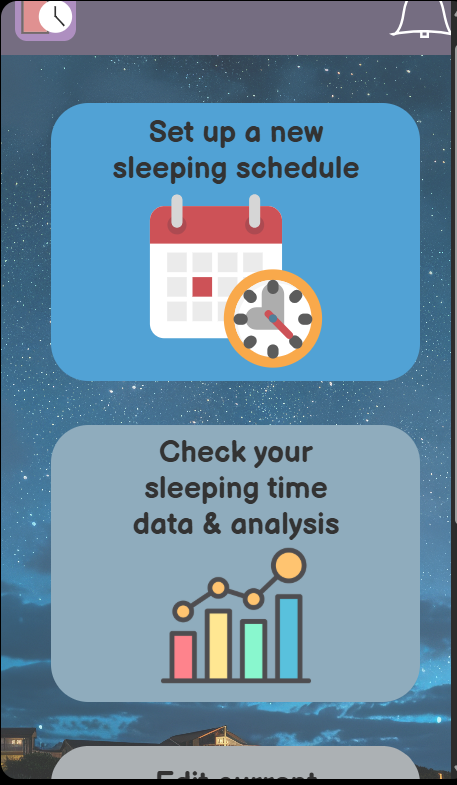
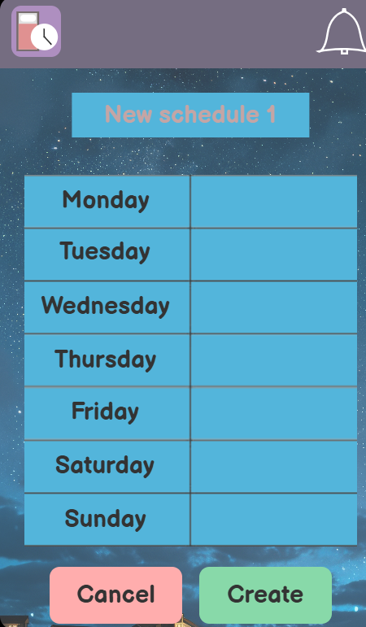
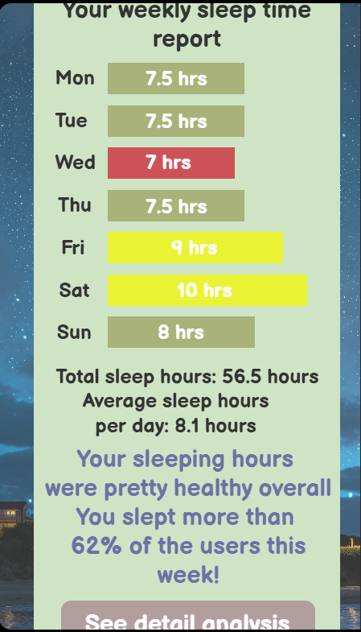
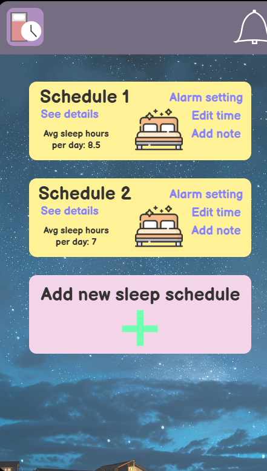
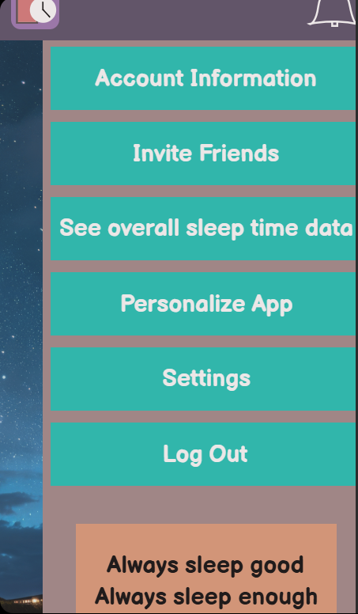
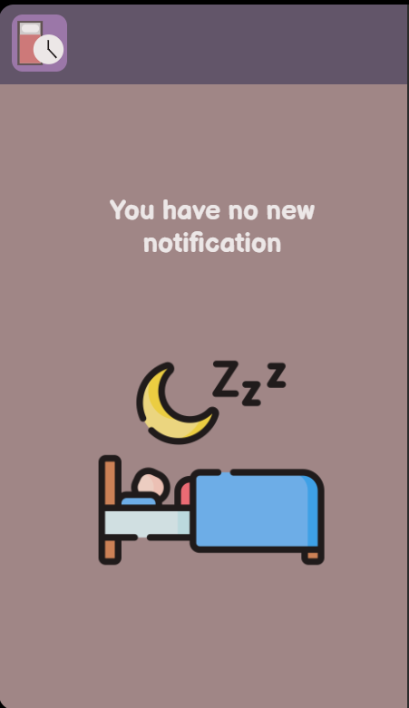
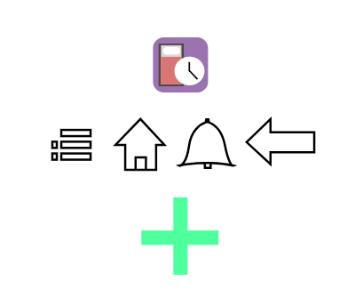

Figma Health App

This is an prototype app that I created using figma for COGS 3 class. The assignment required me to created a health related app prototype using figma, and to create icons and assects for the app. For this app I choose to create an app called MySleepTracker that helps peple keep track of their sleep time and regulate their sleeping schedule. I created and use many icons related to sleep to fit the main function of the app in the prototype, including the logo for the app, as well as other icons that appears in the different pages of the app.
After the user click on the sign in button on the sign in page, the app prototype will take the user to the home page of the app. For the homepage, I created a top and bottom margin with the top margin containing the app's logo and the notification button, and the bottom margin containg the button for a side menu to see more options.
I choose a night scene image for the background of the app to fit the sleeping topic of the app, and I also created the logo of the app using tools in figma also to match the functions of the app being regulate sleep schedule.
For the different buttons and text boxes in the app prototype, I try to use different colors to differentiate them, as well as making the app look more stylish.
The first option on the home page, which is to create a new sleeping schedule, it will take the user to the page to create a new sleeping schedule for each day of the week.
The second option on the home page is to check the sleep time report of the user, which will take the user to the page above showing a report of how long did the user sleep for each day of the week that the app tracks and analyzed the data for the user.
The third option is to check and edit the user's current saved sleeping schedule in the app, which leads the user to the page above. The user can check, edit, and gp create new sleeping schedule on this page.
The side menu button at the bottom right takes the user to the side menu to see more options as shown above. I also added text and icons at the blank spaces on this page related to sleeping.
The notification button on the top right takes the user to the notification page shown above to check notification from the app.
Above are the icons that I made for the app prototype.